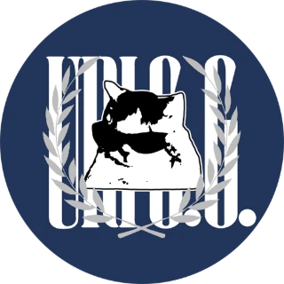

URIGG
2
─
▢
✕
14:32:08
11월 3일 화요일

URIGG · Security.log HUB
Security.log HUB
urigg@hub: ~
Esc
터미널로
Today
D-day
추가
알림
2
Commits
지난 1년 · 전체 저장소
연속
7일
이번 주
90
올해
1,284
Keyword
오늘의 보안 키워드
Programs
코워크 캘린더
v0.1.3 · 11-01 · Windows
Windows 다운로드
대화로 짠 일정을 위젯·아이폰에 띄우는 캘린더
URIGG
PIN
비밀번호로 로그인
14:32